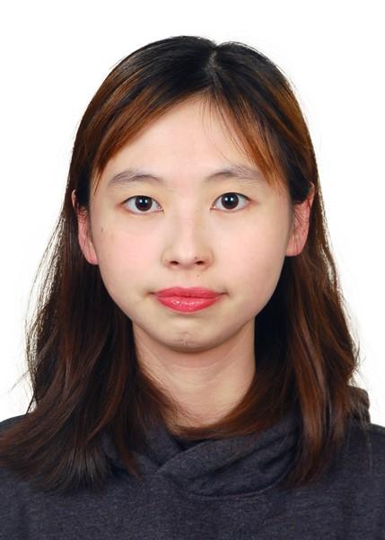
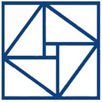
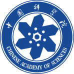
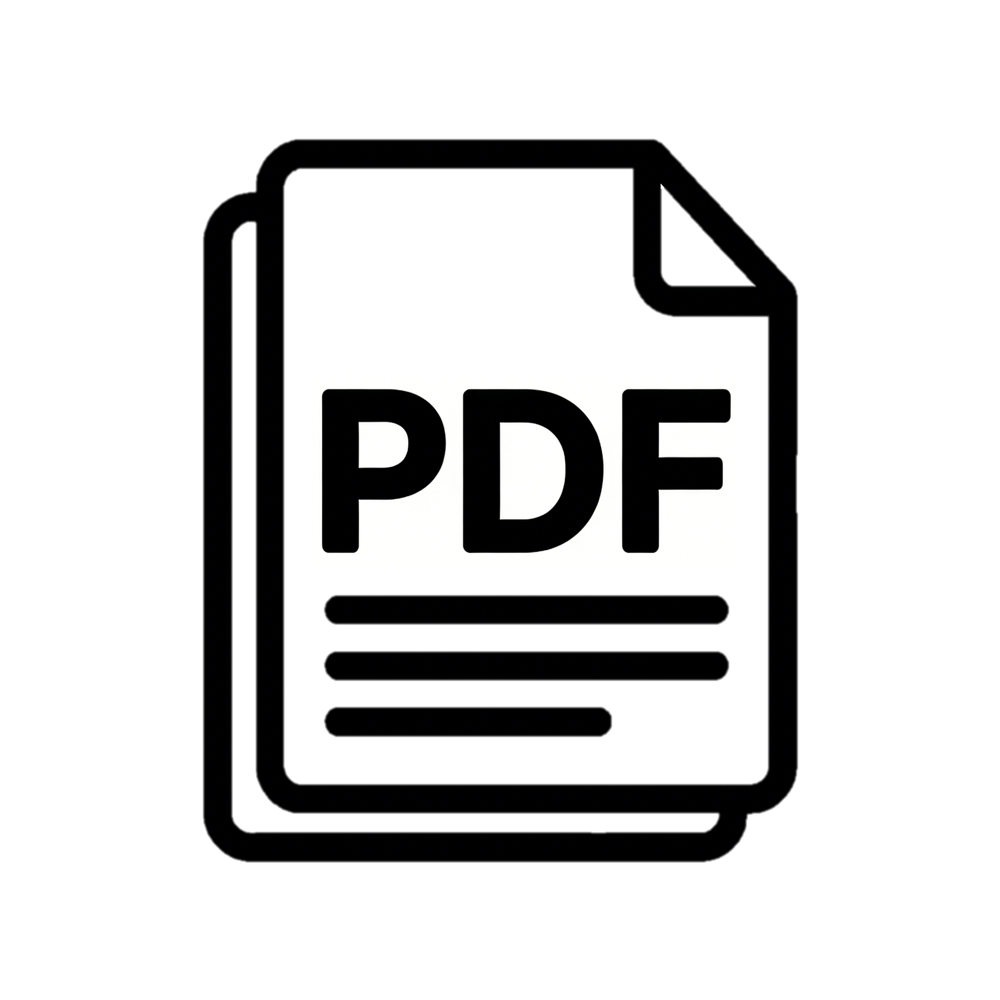
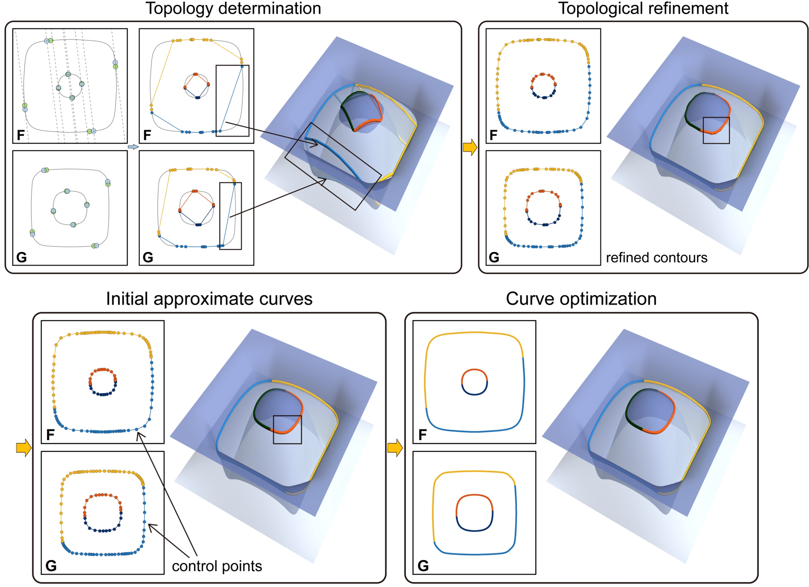
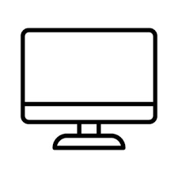
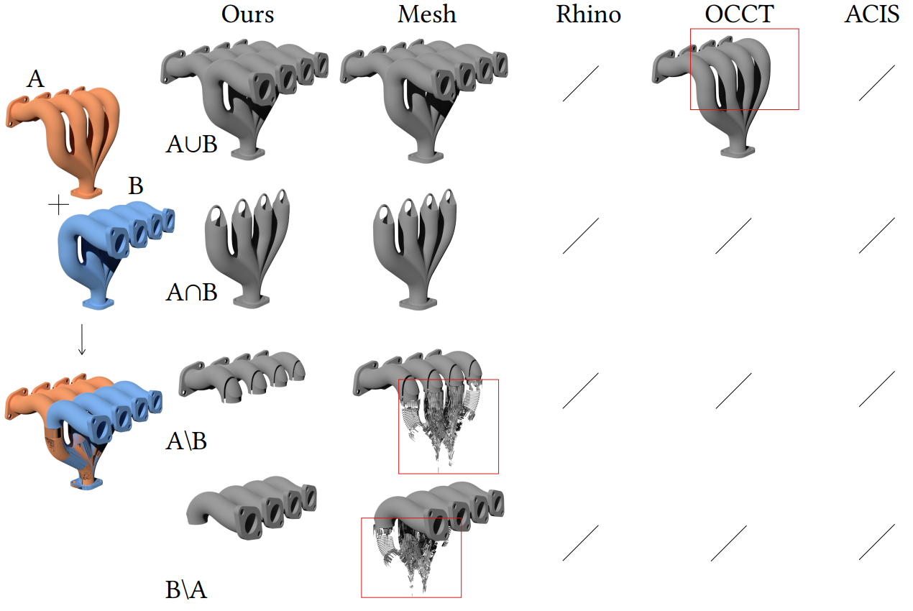
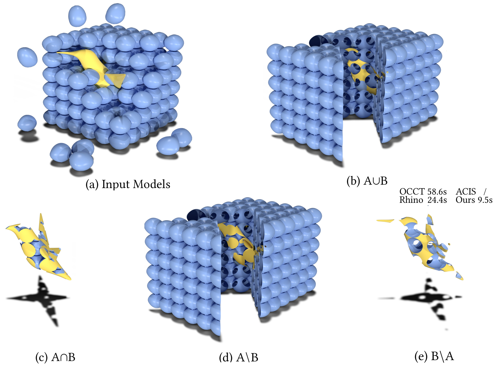
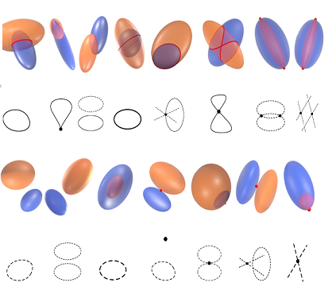
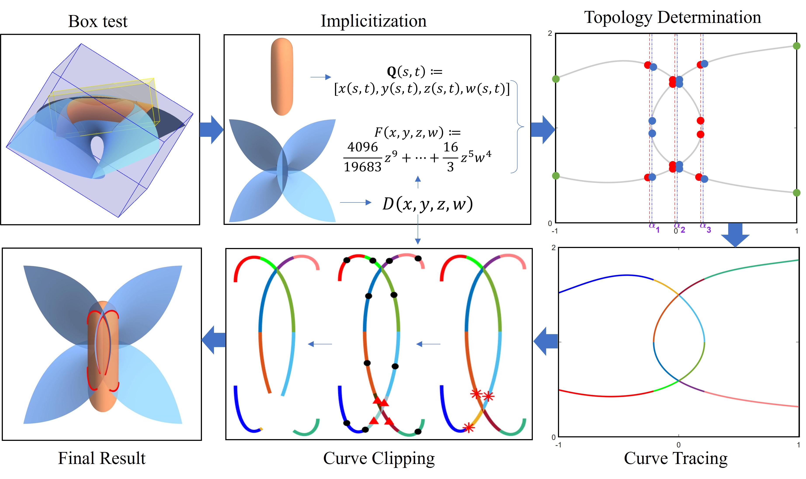

Jieyin Yang （杨婕吟）
 |
Key Laboratory of Mathematics-Mechanization (KLMM), AMSS, CAS |
 |
University of Chinese Academy of Sciences (UCAS) |
| yangjieyin17@mails.ucas.ac.cn | |
| Curriculum Vitae (PDF) |
Biography
I am currently pursuing a PhD degree at the Academy of Mathematics and Systems Science, Chinese Academy of Sciences (AMSS) and University of Chinese Academy of Sciences (UCAS), supervised by Prof. Xiaohong Jia. Before that, I received my Bachelor's degree in Mathematics from UCAS in 2021. My research interest includes computer graphics, computer aided design and computer aided geometric design.
Publications
2025
Improving the Watertightness of Parametric Surface/Surface Intersection
Yuqing Wang, Xiaohong Jia, Jieyin Yang, Bolun Wang, Pengbo Bo, Yang Liu
Computer Graphics Forum, 2025
Yuqing Wang, Xiaohong Jia, Jieyin Yang, Bolun Wang, Pengbo Bo, Yang Liu
Computer Graphics Forum, 2025

paper
Overlap Region Extraction of Two NURBS Surfaces
Jieyin Yang, Xiaohong Jia
ACM Transactions on Graphics (Siggraph Asia), Vol. 44, 2025
paper
Jieyin Yang, Xiaohong Jia
ACM Transactions on Graphics (Siggraph Asia), Vol. 44, 2025
paper

slides
Boolean Operation for CAD Models Using a Hybrid Representation
Yingyu Yang, Xiaohong Jia, Bolun Wang, Jieyin Yang, Shiqing Xin, Dong-Ming Yan
ACM Transactions on Graphics (Siggraph), Vol. 44, 2025
paper slides
Yingyu Yang, Xiaohong Jia, Bolun Wang, Jieyin Yang, Shiqing Xin, Dong-Ming Yan
ACM Transactions on Graphics (Siggraph), Vol. 44, 2025
paper slides

Computing the Intersection of Two Ellipsoids Based on a Fast Algebraic Topology Determination Strategy
Xiao Chu, Kai Li, Xiaohong Jia, Jieyin Yang, Jiarui Kang
Computer Aided Geometric Design (GMP), Vol. 119, 2025
paper
Xiao Chu, Kai Li, Xiaohong Jia, Jieyin Yang, Jiarui Kang
Computer Aided Geometric Design (GMP), Vol. 119, 2025
paper

2024
Accurate and Robust Registration of Low Overlapping Point Clouds
Jieyin Yang, Mingyang Zhao, Yingrui Wu, Xiaohong Jia
Computers & Graphics, 2024
paper
Jieyin Yang, Mingyang Zhao, Yingrui Wu, Xiaohong Jia
Computers & Graphics, 2024
paper

2023
Topology Guaranteed B-Spline Surface-Surface Intersection
Jieyin Yang, Xiaohong Jia, Dong-Ming Yan
ACM Transactions on Graphics (Siggraph Asia), Vol. 42, 2023
paper slides
Jieyin Yang, Xiaohong Jia, Dong-Ming Yan
ACM Transactions on Graphics (Siggraph Asia), Vol. 42, 2023
paper slides

Honorary Awards
| 2025 | CSIAM Applied Mathematics Achievement Award (CSIAM应用数学落地成果奖) |
| 2024 | Doctoral National Scholarship (博士国家奖学金) |
| 2023 | Hua Luogeng Scholarship of AMSS (中科院数学院华罗庚奖学金) |
| 2021–2025 | Excellent Merit Student of CAS (中科院优秀三好学生) |
| 2020 | Undergraduate National Scholarship (本科国家奖学金) |